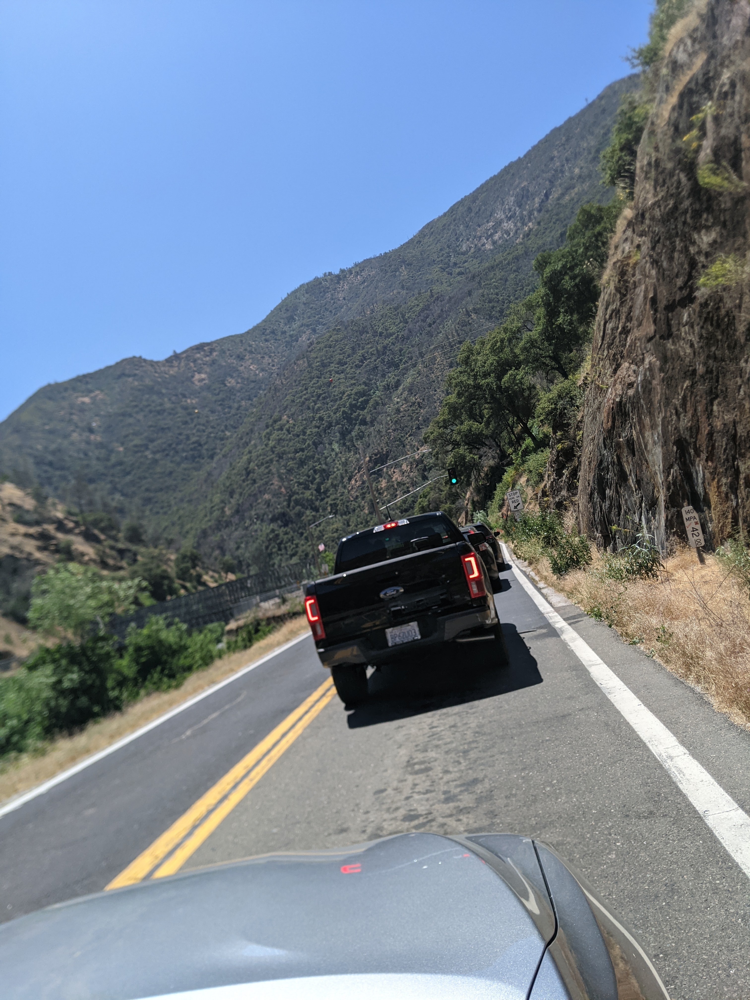
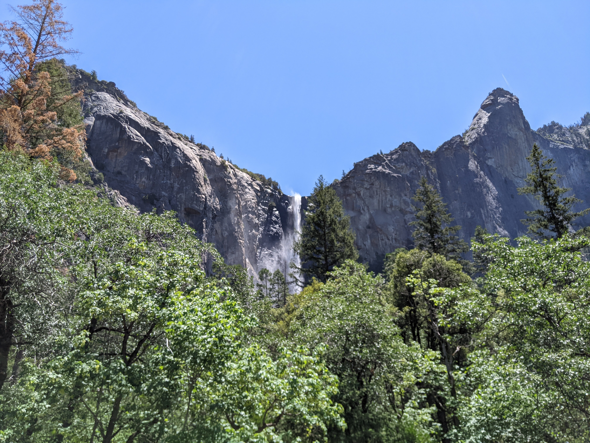
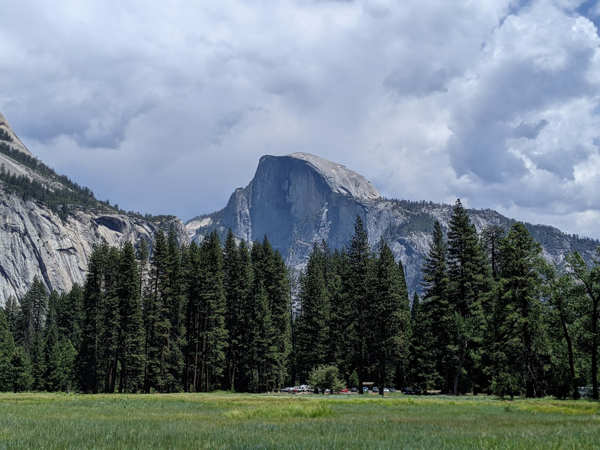
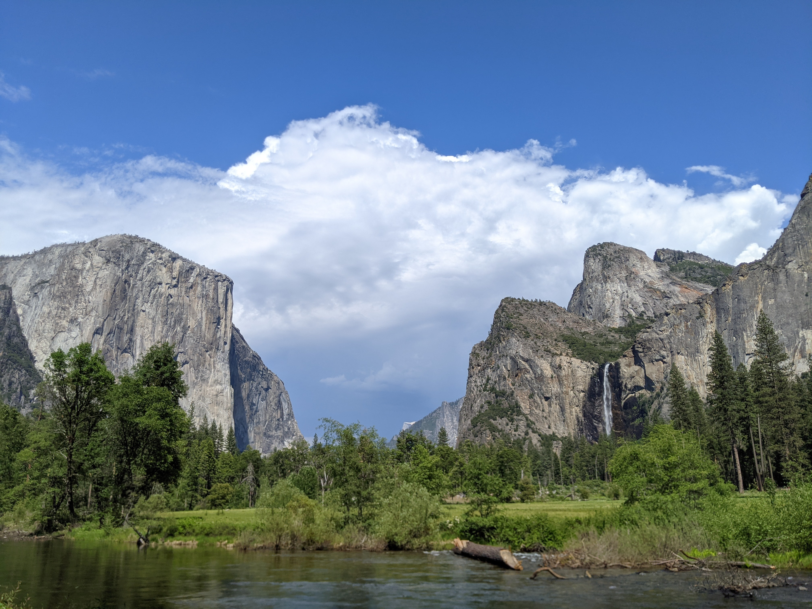
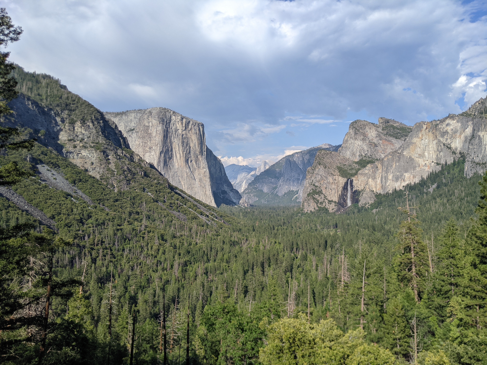
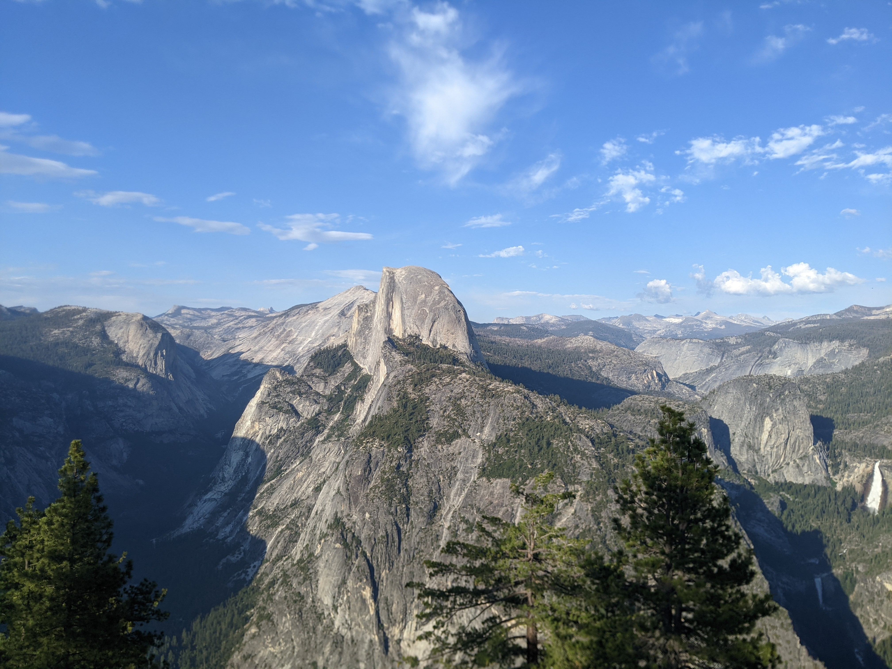
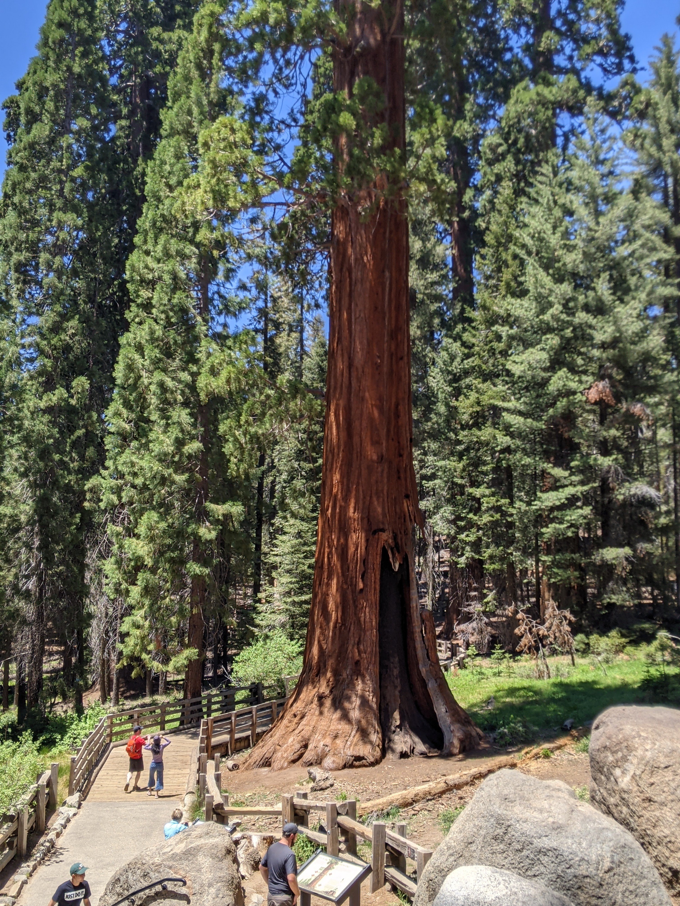
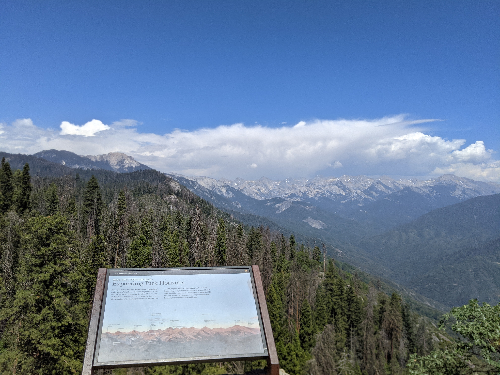

在搬完家休息了几天之后，按照计划，决定和一起搬家的小伙伴们去周边的国家公园游览一下。请假了周四周五，连上周六三天两夜，没有爬长 trail 的打算，仅仅想把主要景点打个卡。
准备工作
国家公园都有对应的官网，官网里有详细和简略的地图，可以先下载规划下路线。景区内的路线一般都相对简单，但问题是因为就那么一两条道，有时错过了一个岔路口，可能要开五六分钟才能到下一个岔口才能调头回去，所以尽量先确定要预先参观的景点，避免把大量的时间花在开车上。
Sequoia & Kings Canyon
Yosemite National Park
宾馆的话，虽然景区内和景区门口的小镇也有旅馆，但听说价格偏高且设施都挺一般的，所以把两天的宾馆都定在了 Fresno 市区内。而且在市区内的话，吃饭的地方也能多点，也可以买买水补充物资。
Yosemite
听说 120 公路都是山路，所以是走 140 上去的。140 的路也就弯道多一点，其他方面都不差。中间会有个桥只允许一辆车通过，所以有个红绿灯调度。沿途有条溪流，也算不错。
桥
开进景区不久，看到第一个瀑布是 Bridalveil Fall。这时一些游客已经在路边停了车，纷纷举起手机和相机拍照了。还算运气，因为这次来这个瀑布水流还算清晰，之前听说可能会因为缺水而看不清这瀑布。不过一个遗憾是，目前走近这个瀑布的 trail 在修建中，所以也只能在路边远远望去了。
Bridalveil Fall
再开几分钟，就算进入景区的一个主要地带了，两边各种建筑都多了起来。进入游客中心和停车场前，有一个很大的草坪，在那可以清晰看见远处的 Half Dome。
Half Dome
据说有条 trail 可以走得更近点，但这条 trail 据说比较抖，而且也要一两小时，我和随行的伙伴们都没有那么大精力也没有足够的时间去参观，所以作罢。
当时我们在那草坪上研究酋长岩在哪，因为我们一路开过来，并没有看到作为 Mac 系统壁纸的酋长岩。虽然按理说应该在来的路上就能看到，可就是谁也没注意到。我们临时查了 Google Map，才发现往回开车大概 5 分钟的地方有个拍照点，在那里是可以拍到酋长岩的，于是马上又开车驾去。到了之后才发现，原来作为壁纸的酋长岩是在夕阳（也可能是日出）拍的，所以看上去偏红，但实际的酋长岩在正午十分的时候是灰白色的。
👈左边的酋长岩
看完酋长岩后，就在景区内的礼品店逛了逛，在里面的星巴克买了个 Been There 系列的马克杯，然后顺着溪流走了走。本来有个地方，是要过桥的，可是走在前面的人突然调头，露出惊恐的表情：“Bear！”。原来桥的另一头走过来一只熊！我们也惊恐地往回跑，在离它大概五十米处观望，发现那熊耳朵边有个吊牌，看来是个常客了。那熊也没看正眼瞧我们，朝另一条道径直走去了。
简单吃了点提前准备的食物后，我们便往 Tunnel View 和 Glacier Point 驶去了。这两个是顺路的，而且都会离游客中心越来越远。
这两个景点都是极好的观景点，可以在以一个比之前较高的视角观察酋长岩和 Half Dome。顺便一提，在 Glacier Point 这个景点，还遇到一对新人在那举办婚礼。这对新人在优美壮观的景色里和众人的见证下，许下了郑重的誓言。
Tunnel View 视角的酋长岩
Glacier Point 视角的 Half Dome
Sequoia & Kings Canyon
第一天回宾馆后，再次研究了一下第二天的行程。因为怕又出现与打卡点擦肩而过的情形，所以就特意 YouTube 上搜了一些 Vlog，比如 离优胜美地最近的国家公园—自驾国王峡谷国家公园kings canyon national park 和 自驾美国加州美洲杉国家公园Sequoia National Park。决定在 Kings canyon national park 拜访过 General Grant Tree 后，就直接前往 Sequoia natonal park。这两个公园有点特殊，虽然算两个，但实际游玩起来，又可以当做一个：这两个景区直接相连，进入其中一个景区后，可以无需再次购票直接进入下一个公园。
这两个景区都有不少的红杉树，尤其是 Sequoia 公园。虽然理论上 General Grant Tree 和 General Sherman Tree 是世界上最大的几棵红杉树，但坐落在其附近的一些红杉树看上去也并没小上多少。所以，如果是拍照的话，并没必要揪着这两棵树不放，可以去和附近游客较少的其它树合影，或许会有更好的摄影体验。
Sequoia
看完几棵大红杉后，下一个目的地就是 Moro Rock。Moro Rock 是一颗可以攀登的大石头，共几百级台阶。在 Moro Rock 可以眺望到远处的众多雪峰。虽然几片云朵遮住了部分山尖，但其巅峰的白雪也依旧依稀可见。
Moro Rock
其它
上面的图片都是用自己的手机 Pixel 3 拍的。但镜头似乎有点问题，自动对焦好之后过个几秒就会焦点就移动了，图片中的部分就变得略微模糊。
大部分移动还是靠开车的，还好有随行的小伙伴可以代驾，不然一个人驾驶的话可真要筋疲力尽。
其实还有很多的一些景色需要几小时的 hiking，如果要欣赏全部的话，还是应该多几天时间。光一天时间，还是只能主要景点打打卡。
湾区开过去的话，大概要 4 小时左右，所以虽然是三天两夜，但其实第三天就没去其它景点，在起床后就动身回家了。